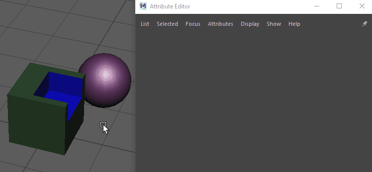
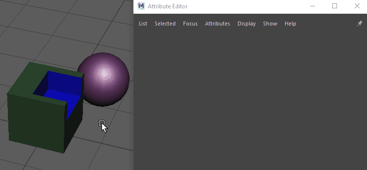

“属性编辑器”(Attribute Editor)将显示选定对象的属性。当工作流需要多个选择时，固定选项卡会在选择更改时保持其加载状态。例如，使用布尔堆栈或为变形器设置驱动者对象时，固定非常有用。
在“属性编辑器”(Attribute Editor)中固定选项卡
- 选择要固定的选项卡。
- 单击
 。

。

“属性编辑器”(Attribute Editor)将显示选定对象的属性。当工作流需要多个选择时，固定选项卡会在选择更改时保持其加载状态。例如，使用布尔堆栈或为变形器设置驱动者对象时，固定非常有用。
在“属性编辑器”(Attribute Editor)中固定选项卡
。